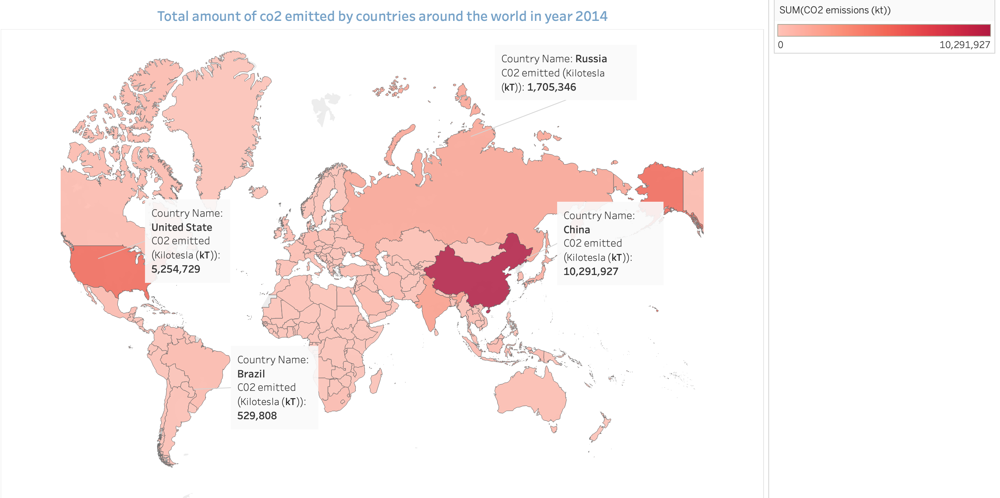
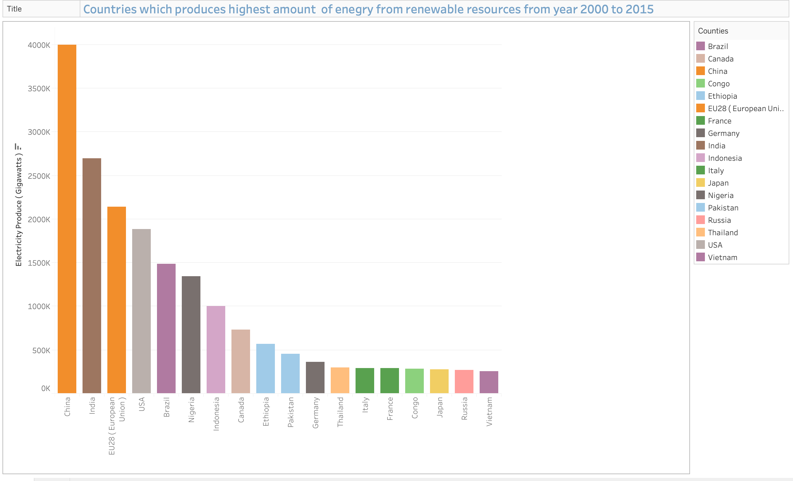
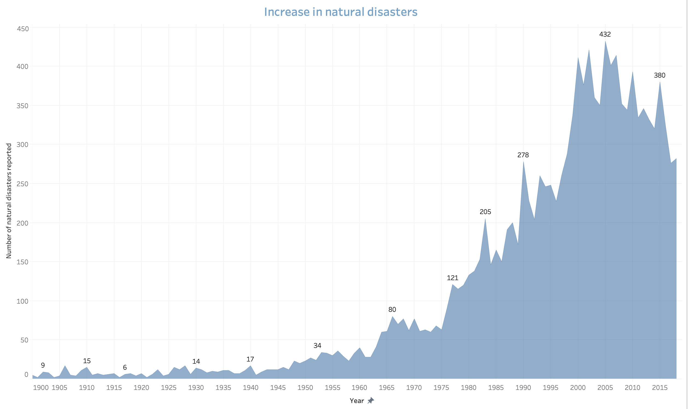
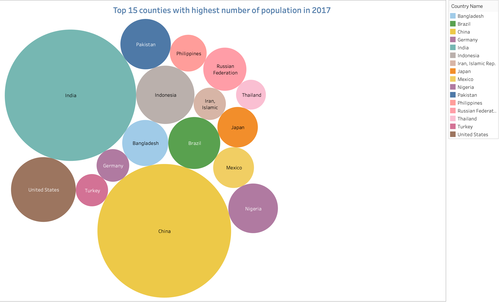
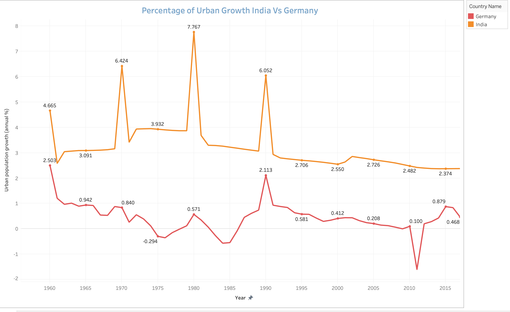
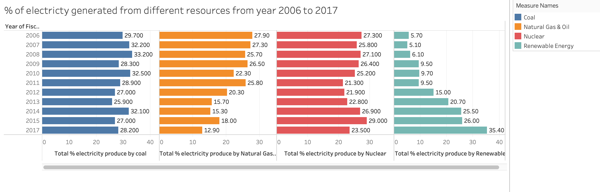
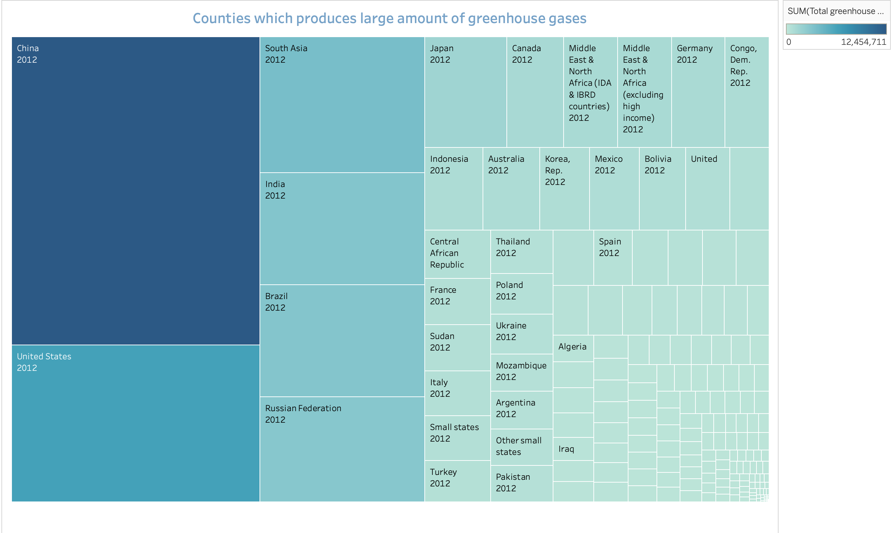
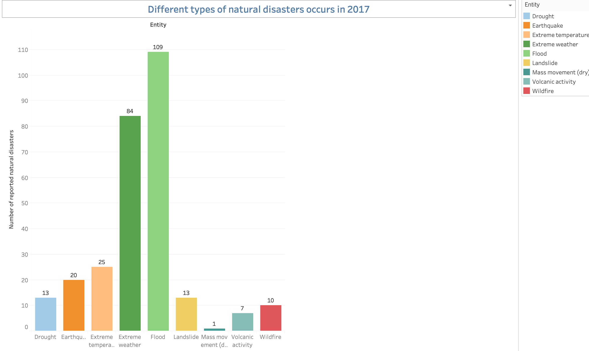
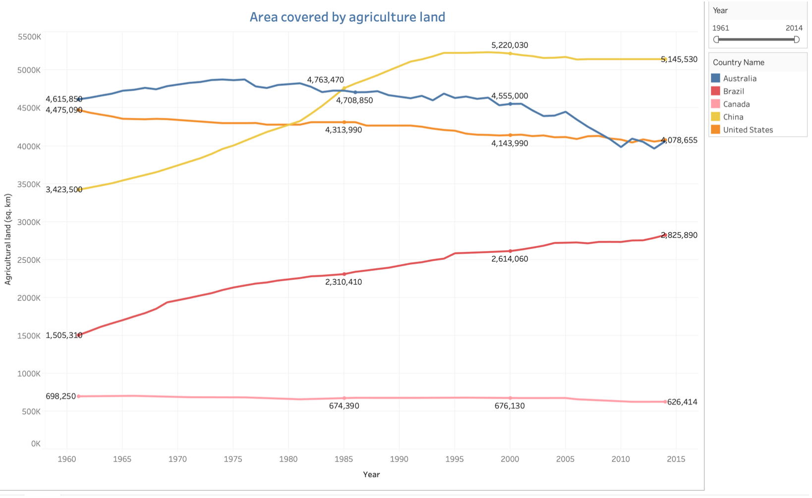
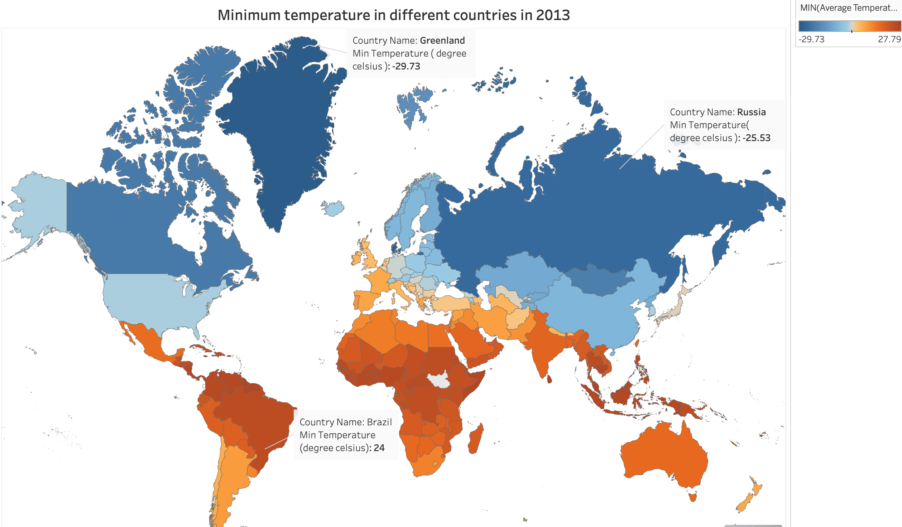

Q1

The world map shows the counties which emitted the maximum number of co2 gas in the air. China produces the highest co2 in the atmosphere which is double compared to co2 emitted by the USA which is second highest after the China.
Co2 is released through human activities such as deforestation and burning fossil fuels of the generation of the electricity and running of vehicles. Emission of co2 in the atmosphere make earth warmer and make weather and season unpredictable. It makes winter colder and summer hotter and cause unpredictable rainfall.
Q2

This visualization shows which counties have produced the highest amount of energy from a renewable resource such as wind, solar and water.
From the diagram, we can say that china produces the highest amount of energy from renewable followed by other countries like India and the USA.
Renewable energy still has a long way to go to replace fossil fuels and become a primary source of energy consumption but things are going in the right direction. The majority of the world counties have started using renewable energy to produce energy.
Q3

This visualization shows the increase in natural calamities and disasters have increased. The highest amount of natural calamities was recorded in the year 2005 which was 432 and in the year 1921, there were just 2 natural calamities recorded as per dataset.
Q4

This is a straight forward visualization that shows the top 15 countries with the highest number of population in 2014. These countries produce a large amount of greenhouse and co2 gases in the atmosphere as shown in section1. So, we can say that a larger population more will be emission on co2 and greenhouse gases.
Q5

This visualization shows the percentage of growth in the urban population in India and Germany throughout the years 1960 to 2017. From the line graph, we can say that there has been a constant growth in the urban population in India. In 1980 India has a large percentage increase in the urban population. On the other side, there have not significant growth in the urban population in Germany. The trends also show there was a decrease in growth in Germany. In the year 2011 Germany has the least urban population growth which was -1.6 %.
Increasing in urban population leads to increasing use in a different resource like electricity, vehicles, and construction of new houses which leads to greater air pollution from emission of co2 and other greenhouse gases.
Q6

This visualization provides information about the percentage of electricity generated from different resources from the year 2006 to 2017.
Coal
In 2006 a large amount of electricity was generated by coal which was 29.70% Which almost remain constant around 27 % to 28 %. It should be decreased in the upcoming year because it releases a large number of greenhouse gases in the atmosphere.
Natural Gas
From the visualization, we can see that electricity production from natural gas was 27.90 % in 2006 but in 2017 its production decrease by 15% which was just 12.90 % which is a good sign. It emitted a large amount of carbon dioxide, monoxide, and other carbon compounds in the atmosphere contributing to the greenhouse effect.
Nuclear
Electricity produced from nuclear resources seems to remain constant, not a quick deviation can be seen in the trends. It does not emit a large number of greenhouse gases. It produces a large amount of Radioactive waste which is a form of solid and liquid and must be taken care of and disposed of carefully.
Renewable Resource
There has been significant growth in electricity produces by renewable resources from the year 2006 to the year 2017. We can take this as positive trends as more use of renewable resources is taken into implementation.
Q7

The visualization is a good way to visualize which countries have a large emission of greenhouse gages in the year 2012. China emits the highest amount of greenhouse gases which followed other populated countries like India, Russia, and the United States.
Q8

This bar graph shows the different types (floor, Extreme temperature, wildfire, landslide, Earthquake, etc) of natural calamities occurs in the year 2017. This helps us to get information natural calamities that occur most in the year 2017. As we can see there 109 floors reported in the year 2017 and furthermore, we can analyze which locations are most affects by different calamities.
Q9

This shows the comparison of the increase and decrease of agriculture land in Australia, the United States, Brazil, China, and Canada. The agriculture land in brazil and china increased from 1960 to 2015 and the other side decreasing trends are shown in Australia and the United States.
Q10

This visualization shows the minimum temperature of different countries around the world. From this visualization, we can see that Greenland has -29 degrees celsius which is lowest around the whole world in year 2013. The countries in orange color have high minimum temperature and countries in blue color have low maximum temperature.
Summary
Working with this assignment was quite a great experience from cleaning the data to analyzing the data and figuring out the question which to took and how to form an overall visualization. I learn a lot of amazing functionality which are provided by Tableau. It was quite a challenging task to visualize when the data is unnormal. It took me a lot of time to make in a proper visualize format. It learns a lot about how to make the visualization more effective and make it speak trends and patterns just by seeing it.